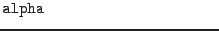

XMM-Newton Science Analysis System
selectlib (selectlib-4.74.1) [xmmsas_20170112_1337-16.0.0]
Three-dimensional filter functions
The following functions evaluate to true if a vector lies
inside or on the border of the specified three dimensional figure:
where
: vector defining symmetry axis of figure
 : half opening angle of cone in rad
: vector for inclusion test
Please note: For the sake of readability and clarity it is recommended
to avail these filters in conjunction with the In
operator (see below).
XMM-Newton SOC/SSC -- 2017-01-12